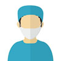

上海儿童医院普陀新院三甲
- 上海市儿童医院是一所集医疗、保健、教学、科研、康复于一体的三级甲等儿童医院，前身是由我国著名保健、教学、科研、康复于一体的三级甲等儿童医院，前身是由我国著名上海市儿童医院是一所集医疗、保健、教学、科研、康复于一体的三级甲等儿童医院，前身是由我国著名保健、教学、科研、康复于一体的三级甲等儿童医院，前身是由我国著名上海市儿童医院是一所集医疗、保健、教学、科研、康复于一体的三级甲等儿童医院，前身是由我国著名保健、教学、科研、康复于一体的三级甲等儿童医院，前身是由我国著名上海市儿童医院是一所集医疗、保健、教学、科研、康复于一体的三级甲等儿童医院，前身是由我国著名保健、教学、科研、康复于一体的三级甲等儿童医院，前身是由我国著名 更多 >>
预约信息
- 张** 中医科 35分钟前
- 张** 张医生（专家） 3小时前
- 张** 中医科 7小时前
- 李** 中医科 12小时前
- 张** 中医科 1天前
- 王** 中医科 20天前
院内搜索
医院导航
- 上海市普陀区泸定路355号，近普通路
- 021-52976020
- http://www.shchildren.com.cn/
停诊公告
- 中医科 张忠祥 06-14上午
- 小儿普外科 李正枢 06-14全天
- 中医科 张忠祥 06-14上午
- 小儿普外科 李正枢 06-14全天
- 中医科 张忠祥 06-14上午
- 小儿普外科 李正枢 06-14全天
- 中医科 张忠祥 06-14上午
- 小儿普外科 李正枢 06-14全天
本院推荐专家
-

魏乐勋 副主任医师
上海复旦大学附属中山医院
影像科
擅长:CT、核磁共振影像诊断，特别是神经系统、呼吸系统
-
魏乐勋 副主任医师,副教授
上海复旦大学附属中山医院
影像科
擅长:擅长脑动脉瘤、脑血管畸形、硬脑膜动静脉瘘、外伤性海绵窦动静脉瘘擅长脑动脉瘤、脑血管畸形、硬脑膜动静脉瘘、外伤性海绵窦动静脉瘘擅长脑动脉瘤、脑血管畸形、硬脑膜动静脉瘘、外伤性海绵窦动静脉瘘
-
魏乐勋 副主任医师
上海复旦大学附属中山医院
影像科
擅长:擅长脑动脉
-
魏乐勋 副主任医师
上海复旦大学附属中山医院
影像科
擅长:CT、核磁共振影
-
魏乐勋 副主任医师
上海复旦大学附属中山医院
影像科
擅长：擅长脑动脉瘤、脑血管畸形、硬脑膜动静脉瘘、外伤性海绵窦动静脉瘘
-
魏乐勋 副主任医师
上海复旦大学附属中山医院
影像科
擅长:擅长脑动脉瘤、脑血管畸形、硬脑膜动静脉瘘、外伤性海绵窦动静脉瘘
医院简介
南通瑞慈医院位于国家级南通经济技术开发区、南通市新城区、国家4A级旅游风景区交汇处。医院于2002年4月开院，被列为南通市“十五”规划重点项目，是中国开办较早、规模较大的民营医院之一，也是集医、教、研于一体的大型现代化三级乙等综合医院。
瑞慈医院以“为人民服务”为办院宗旨，秉承“以人为本”的服务理念，在提供高质量的医疗服务的基础上，积极致力于医疗技术发展和重点学科建设，形成了以儿科、心内科、心胸外科、骨科等省、市级重点专科为代表的特色综合性医疗品牌。旨，秉承“以人为本”的服务理念，在提供高质量的医疗服务的基础上，积极致力于医疗技术发展和重点学科建设，形成了以儿科、心内科、心胸外科、骨科等省、市级重点专科为代表的特色综合性医疗品牌。旨，秉承“以人为本”的服务理念，在提供高质量的医疗服务的基础上，积极致力于医疗技术发展和重点学科建设，形成了以儿科、心内科、心胸外科、骨科等省、市级重点专科为代表的特色综合性医疗品牌。
地址：江苏省南通市经济技术开发区星湖大道2000号
电话：健康热线：（0513）85969 666传真：（0513）85969 555瑞慈总机：（0513）85969 999
官网：http://www.rich-hosp.com/
预约规则
如遇专家班次停诊会以短信通知，请保持手机畅通
特需门诊预约可点击：中山医院特需门诊
可预约班次更新时间：每日0:00更新。相关预约问题及情况，可至医院门诊8楼2区 预约中心沟通咨询或致电64041990*2617。
中山医院急诊部搬迁：现中山医院急诊于10月27日早上8：00至11月3日早上8:00，急诊停诊一周，自11月3日8点起，中山医院新急诊部于斜土路1609号重新开诊
1、未满14周岁不接受预约，医院无儿科。
2、中山门诊磁卡为15位医联卡
3、14年4/11日起，普外科，秦净专家门诊升级为特需门诊，如需预约特需门诊，请搜索“复旦大学附属中山医院特需门诊部”
4、请确认患者信息的准确性。如预约的患者姓名或证件信息错误，直接影响患者就诊当日无法挂号，需要重新预约。
5、预约周期：2个工作日-14天内（普通门诊及专病专科可约2个月内）。
6、取消时限：提前2个工作日16：00前。